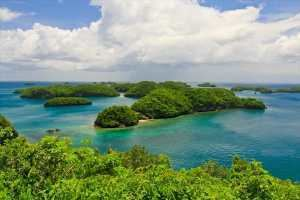
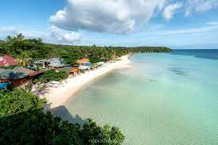

Back to Map
Santiago Islands

Santiago Garden

Santiago Island
White Beach" title="Santiago
White Beach" style="width:100%">Santiago
White Beach" style="width:100%">
Santiago
White Beach
Description:
Santiago Island is an island located off the northeast coast of Bolinao, Pangasinan, Philippines.
It is composed of six barangays namely Binabalian, Goyoden, Lucero, Pilar, Salud, and Victory, all within the municipality of Bolinao.
Located in this island is the Giant Clam Ocean Nursery and Marine Protected Areas (MPAs).
It is ideal for various aquatic activities like scuba-diving, snorkeling, and boating.